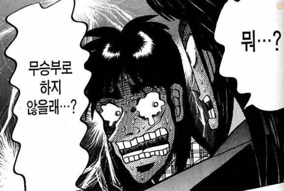

https://youtu.be/3MzcCXLG5XI?si=s4w9Eui8IeNSj7Ba
1. 엘살바도르가 아이티에서 실종된 자국군인 4명을 찾기위해 군인 2000명을 파병하고 얼마안되서 갱단 두목중 1명이 사망
2. 갱단들은 평화와 안정을 위해 대화로 해결하자고 함, 그러면서 무장해제 요구에는 대화하자는게 항복은 아니라고 선그음
3. 아이티 정부도 PMC를 고용해서 같이 소탕 작전을 뛰는중
참고로 다른 갱단 두목은 유엔에 중재요청 서한 보냄

댓글
수집 당시 댓글 30개
유아학교 · 1 일 전
커뮤니티 · 1 일 전
돼지바보임 · 1 일 전
cuuub · 1 일 전
엘살바도르면 걍 다 죽일거 같은데
케틀햇 · 1 일 전
꼬라지 보아하니 인질로 잡을 생각도 안한거 같고
그냥 늘 하던대로 생각 좆도 없이 자국군 죽이듯 군인 납치해서 죽였을건데 문제는 그게 외국군인거지
돌려준다는 말도 없는거 보면 누가 누군지도 파악 안하고 피아식별없이 걍 살처분한듯
이제와서 좆될거 같으니까 찾아봐도 어떤 갱단의 누가 어떻게 죽였는지 어디 묻었는지 알까 모르겠네
월탱죠아오공맘죠아 · 1 일 전
요새 유엔 일 함?
· IllIIllIlI · 1 일 전
그새끼들 돈만 처먹고 일 안하는 병신들인거 까발려진지 좀 됐음
· 쓱간디 · 1 일 전
유럽이나 아프리카 출신 고위인사들 퇴직금 챙겨주는 기관 아님?
· Ainsof · 1 일 전
625가 유엔이 군사적으로 개입해서 그나마 소기의 성과라도 제대로 거둔 유일한 사례임
· 코코린이 · 1 일 전
그러고보니 유엔본지 좀 오래됐네
· 일본시골왜노자 · 1 일 전
트럼프가 전세계 다 해집어놨더니 부작용으로 진짜 일안하는 조직들은 드러남.
트럼프만 살처분하면 완벽한 세상
꼬부욱 · 1 일 전
어차피 근본적인 사회 문제와 공권력, 치안이 해결되지 않는 이상 다 조져도 새 갱단이 생겨서 자리 차지하겠지. 대신 전례를 보고 외국군은 안 건드리려 할테니 저러는 성과는 있을지도.
무당벌레 · 1 일 전
저기 깜빵 삼청 교육대 상위모델 아님?
뱀고기 · 1 일 전
갱단이 왜 유엔이랑 얘기함 지들이 뭐라도 되는줄 아나보네
배똘 · 1 일 전
깨갱
올그떠사냥꾼 · 1 일 전
갱단이 유엔이 뭐요? ㅋ
ㅁㄴㅇㄻ · 1 일 전
갱단 카운터가 명분확실한 군대네
선장입수 · 1 일 전
엘살바도르 머통령이 범죄자 조지는걸로 인기몰이하는데 자국민을 위해 외국 갱단 소탕하기?
국뽕으로 지지율 뽑기 딱 좋지 ㅋㅋ
Rinka029 · 1 일 전
아무리 븅신이어도 그렇지 일개 조폭이. 그것도 어디큰나라 집단도아니고 아이티…의 갱이
자기네나라보다 훨씬큰 군대상대로… 군대가 먼디 모르나
임금잡채 · 1 일 전
부두보이즈 컷
쓱간디 · 1 일 전
같은 섬에 바로 옆나라 도미니카공화국은 그래도 나라꼴은 갖추고 사는데 아이티는 진짜 개막장상태
오늘도야근이다 · 1 일 전
아무리 갱단이 강력해도 군대가 제대로 각잡고 공격하면 아무것도 못하네 ....
· 일본시골왜노자 · 1 일 전
일단 명분이란게 중요한게, 국가 수장이 먼저 비상사태로 납득할 만한 상황이였드래서 그 원흉이 살려달라고하든 말든 비상사태 원흉제거까지는 대통령 마음대로지.
· 야동왕김탁탁 · 1 일 전
장비빨이 다르지 ㅋㅋㅋㅋ
시므 · 1 일 전
대가리 얼마나 생각이 없으면 군을 건드리냐 ㅋㅋㅋㅋㅋㅋㅋ
· 겜신병자 · 1 일 전
자국 치안도 짓밟고 다닐정도로 자의식이 충만해진 상태에서 군대도 좃으로 본거지 뭐
· 오늘도야근이다 · 1 일 전
정확히는 외국군을 건드린게 화근임 자국군은
쉽게 박살냈는데 외국군도 자국군 수준으로 쉽게 박살낼줄 알고 저런 도발을 한듯 ...
년도가입 · 1 일 전
걍 다죽이고 아이티 알아서 하라고할듯
사실 좀 만 더 하면 엘발바도르가 아이티먹으려들지도
· 오늘도야근이다 · 1 일 전
아이티는 먹어도 쓸만한 자원이 없어서 굳이 돈들여서 점령할 필요가 있나?
바다요리 · 1 일 전
엘살바도르 대통령>> 저동네 살인율 1위국가에서 꼴지로 만든놈임
행적이 좋든 싫든 갱단조지기 지구상에서 제일 잘하는 놈ㅋㅋㅋㄱ